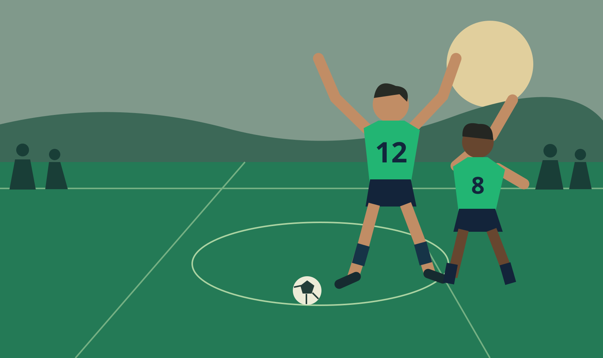

U8 Mixed
Tuesdays 5:00 pm
Coach Dana Ortiz

Northeast Portland / Since 1994
Community soccer in Northeast Portland since 1994. Eight teams, 340 players and a Saturday morning that runs on orange slices.
One club.
Room for everyone.
Tuesdays 5:00 pm
Coach Dana Ortiz
Tuesdays 5:30 pm
Coach Priya Shah
Wednesdays 5:30 pm
Coach Marcus Bell
Mondays 6:00 pm
Coach Tom Reilly
Thursdays 6:00 pm
Coach Ana Ruiz
Thursdays 6:30 pm
Coach Ben Okafor
Wednesdays 7:30 pm
Coach Liz Chen
Mondays 7:30 pm
Coach Sam Patel
Sample fixtures and results from the supplied season. Dates are illustrative, not live schedules.
No sample fixtures for this team. Ask the club for the current schedule.
No sample results for this team yet.
Showing all teams.
Training at Delta Park
Most teams train at Delta Park fields 3 and 4. Arrive ten minutes early, bring water and shin guards, and park in the north lot, not on the grass.
Registered players
Volunteer coaches
Seasons and counting
Your Saturday people
All teams play from March to June. Fees cover kit, referees and field rental, and nobody is turned away for money.
Ask about the hardship fund. It is confidential and it is there to be used.
On our side / concept supporters